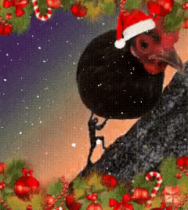

La seguente canzone, da come si deduce dal titolo, è il remix del famosissimo scioglilingua che vede protagonista l'artista Apelle, figlio d'Apollo, che dopo aver raffigurato una palla di pelle di pollo tutti i pesci salirono a galla per vederla. Soltanto questa canzone,grazie al magnifico remix di questi ragazzi, è riuscita a mostare la grandiosità delle gesta di Apelle appieno. Buon ascolto.
Apelle-remix

Bar Mediterraneo
0:00
0:00